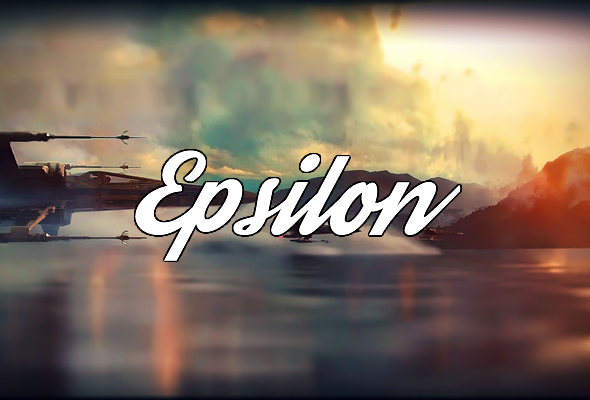

About Us
Epsilon is one of the smaller guilds within the SIGMA ALLIANCE, created in June 2017. We have made quick and steady progress in the time we’ve been here. Epsilon is a semi-casual guild, in that we have slightly relaxed requirements for daily ticket contribution. But don’t let the semi-casual description fool you, you will never find a more committed and hardworking group! We are an energetic guild with a strong base of members who are excited to continue to increase our power together as a guild.
Our guild refresh time is at 3:30pm EST.
In the most recent Light Side Territory Battles, we achieved 35 stars.
In the most recent Dark Side Territory Battles, we achieved 39 stars.
Epsilon Leadership:
- Guild Leader: Hiro Himada
- Guild Officers: Invader Zim, Skittles1113, Prime Force, BadKarma, Batis1020, Rydaron, Vesper, Cthulhu
Requirements for Membership
Epsilon has recently crossed the 120 million total guild GP threshold. As such, we are looking for members with a minimum of 1,800,000 total GP. We also require members to have a public swgoh.gg profile, use Discord for guild chat, and follow guild rules as outlined below.
Raids / Territory Battles / Territory Wars
hRancor Raid ("The Pit"): HEROIC
- Launch and ZERG occur at 8:00pm EST
- Upon launch, the first 24 hours is a join period. This allows everyone to register and at least collect rewards if they are not able to be on when ZERG is called.
- After the 24 hour join period, an officer will call ZERG. Once ZERG has been called, members are free to post damage.
- Pre-loading is acceptable, but we ask pre-loaders to wait until at least 8:10pm EST to post solo damage.
hAAT Raid ("Tank Takedown"): HEROIC
- Launch and ZERG occur at 9:00pm EST
- Upon launch, the first 24 hours is join period. This allows everyone to register and at least collect rewards if they are not able to be on when ZERG is called.
- After the 24 hour join period, an officer will call ZERG. Once ZERG has been called, members are free to post damage.
Sith Triumvirate Raid
- We are currently running T6 Sith Triumvirate Raids.
- Must be building, or have built at least 1 HSTR team, and be working on building more.
- As soon as the raid is launched, it is open to attack. There is no zero-damage phase.
- We require all members to do their best and post a minimum of 1 million damage in the raid. Failure to reach the minimum damage results in a strike. We currently have Mid-february set as our first attempt at the HSTR.
Territory Battles
- Members should use common sense and follow general direction provided by guild leadership. We will give platoon instructions in game as to try and fill some platoons and get those bonuses, rather than spread ourselves and not finish filling some of them.
- Light Side TB
- Members are required to complete 25+ combat mission waves. Failure to reach this or be inactive for 2 phases results in a strike.
- Members are required to have and 6* Hoth Rebel Soldier, 6* Rebel scout, 7* Phx.
- Requirements will steadily increase as we grow.
- Dark Side TB
- Members are required to complete 25+ combat mission waves. Failure to reach this or be inactive for 2 phases results in a strike.
- Members are required to have 6* Colonel Starck and 6* General Veers.
- Requirements will steadily increase as we grow.
Territory Wars
- TW is one that, if you join, you are required to participate to the max. As such, if you are unable to participate fully, we ask that you not join TW. The penalty for not joining Territory Wars for first time is a strike as part of our comprehensive strike system.
- Follow guidance posted on in game for setting defensive strategy.
Guild Rules
- Discord
- All members must have a Discord account, and check in on Discord regularly, ideally once or twice a day. Raid announcements, guild updates, and other information is primarily distributed through Discord. We encourage all members to be active on Discord, as Discord offers access and interaction with other members within the SIGMA ALLIANCE community.
- Please keep Discord chat content PG-rated.
- Please do not troll or spam in the Discord chat rooms.
- Please be respectful and polite towards others.
- Ticket Contribution
- All members should be aiming to contribute 600 tickets per day.
- Minimum ticket contribution is 3,500 tickets per week. Failure to this results in a strike.
- Post in #leave_of_absence channel on Discord if you’ll be away from the game and unable to complete tickets.
- Other Rules
- Please respect the guild leadership. Our officers work very hard to make the guild run smoothly. Sometimes mistakes get made. Please be understanding, and if you are unhappy with something, or feel you have been treated unfairly, please openly bring it to the attention of an officer or the guild leader.
Disciplinary
Mistakes happen, and we're generally very understanding here in Epsilon. However, in order for our guild to progress and meet our maximum potential, we have implemented a 3 strike system. Strikes are issued for failure to meet minimum ticket requirements, failure to follow Territory Battle direction, or violation of any of the guild rules. Strikes are issued at the discretion of guild leadership.
- 1st Strike: Fair warning
- 2nd Strike: Serious warning, miss raid, either a HAAT or Pit raid
- 3rd Strike: Demotion to a lower guild
Strikes are purged after a month, so members will not be in danger of guild removal unless multiple rule violations occur within a relatively short time frame.
Last Updated 02/04/2019